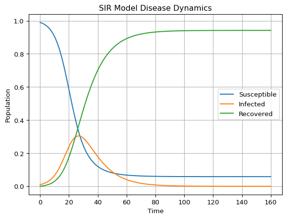

from amlab.epidemics import final_size, peak_prevalence
print(f"I_max = {peak_prevalence(3.0, 0.99, 0.01):.3f}")
print(f"final size = {final_size(3.0, 0.99):.3f}")I_max = 0.304
final size = 0.931Module 1: Low-Dimensional Dynamics
Simulate SIR and SIS (this page and the next), fit the SIR model to incidence data, and test how well the peak can be predicted from early data.
The SIR model is a small system of three ODEs (Kermack and McKendrick 1927; Keeling and Rohani 2008). The solve_ivp workflow from Solving Initial Value Problems applies unchanged: the state is now a vector.
\[ \dot S = -\beta SI, \qquad \dot I = \beta SI - \gamma I, \qquad \dot R = \gamma I . \]
The state has three components, but \(S + I + R = 1\) is conserved, so only two are independent.
For \(\beta = 0.3\), \(\gamma = 0.1\), \(S(0) = 0.99\), \(I(0) = 0.01\), use the formulas from The Reproduction Number and The Final Size of an Epidemic to predict the peak prevalence \(I_{\max}\) and the final size before you simulate.
Here \(R_0 = 3\). The peak prevalence is \(I_{\max} = I_0 + S_0 - \frac{1}{R_0}\bigl(1 + \ln(R_0 S_0)\bigr) \approx 0.304\), reached when \(S = 1/R_0 \approx 0.333\). The final size relation \(\ln(S_0/S_\infty) = R_0 (1 - S_\infty)\) gives \(S_\infty \approx 0.059\), so about 93% of the susceptibles are infected and \(R_\infty \approx 0.94\).
from amlab.epidemics import final_size, peak_prevalence
print(f"I_max = {peak_prevalence(3.0, 0.99, 0.01):.3f}")
print(f"final size = {final_size(3.0, 0.99):.3f}")I_max = 0.304
final size = 0.931Complete the right-hand side of the SIR model. The solver only needs one function that returns the three derivatives.
def sir_model(t, y, beta, gamma):
s, i, r = y
dsdt = # TODO
didt = # TODO
drdt = # TODO
return [dsdt, didt, drdt]def sir_model(t, y, beta, gamma):
s, i, r = y
dsdt = -beta * s * i
didt = beta * s * i - gamma * i
drdt = gamma * i
return [dsdt, didt, drdt]The solver call follows the usual pattern:
solution = solve_ivp(
sir_model,
t_span=(0, 160),
y0=[0.99, 0.01, 0.0],
args=(0.3, 0.1),
t_eval=np.linspace(0, 160, 1000),
)The reference implementation amlab/odes_1d/sir_model.py provides sir_model and the plotting helper plot_sir_model.

Check three facts against the theory: \(S + I + R\) stays equal to 1, the peak of \(I\) matches the formula, and the peak happens when \(S = 1/R_0\).
import numpy as np
from scipy.integrate import solve_ivp
from amlab.epidemics import peak_prevalence
from amlab.odes_1d.sir_model import sir_model
sol = solve_ivp(sir_model, (0, 160), [0.99, 0.01, 0.0], args=(0.3, 0.1),
t_eval=np.linspace(0, 160, 4001), rtol=1e-9, atol=1e-12)
s, i, r = sol.y
print(f"max |S+I+R-1| = {np.max(np.abs(s + i + r - 1)):.1e}")
print(f"I_max simulated = {i.max():.4f}, formula = {peak_prevalence(3.0, 0.99, 0.01):.4f}")
print(f"S at the peak = {s[i.argmax()]:.4f}, 1/R0 = {1 / 3:.4f}")max |S+I+R-1| = 2.2e-16
I_max simulated = 0.3038, formula = 0.3038
S at the peak = 0.3331, 1/R0 = 0.3333Start from \(\beta = 0.3\), \(\gamma = 0.1\), \(I(0) = 0.01\) and change one thing at a time.
With \(\beta = 0.45\) (\(R_0 = 4.5\)) the peak rises from 0.30 to 0.45 and comes earlier, near day 17 instead of day 27. With \(\gamma = 0.15\) (\(R_0 = 2\)) the peak drops to 0.16 and the final size to 0.80; the epidemic is smaller, and it dies out a little sooner. With \(I(0) = 10^{-5}\) the peak height (0.30) and the final size (0.94) barely change, but the peak moves from day 27 to about day 61.
for beta, gamma, i0 in [(0.3, 0.1, 1e-2), (0.45, 0.1, 1e-2), (0.3, 0.15, 1e-2), (0.3, 0.1, 1e-5)]:
run = solve_ivp(sir_model, (0, 300), [1 - i0, i0, 0.0], args=(beta, gamma),
t_eval=np.linspace(0, 300, 30001), rtol=1e-9, atol=1e-12)
i_run = run.y[1]
print(f"beta={beta}, gamma={gamma}, I0={i0:.0e}: peak {i_run.max():.2f} "
f"on day {run.t[i_run.argmax()]:.0f}, final R {run.y[2, -1]:.2f}")beta=0.3, gamma=0.1, I0=1e-02: peak 0.30 on day 27, final R 0.94
beta=0.45, gamma=0.1, I0=1e-02: peak 0.45 on day 17, final R 0.99
beta=0.3, gamma=0.15, I0=1e-02: peak 0.16 on day 29, final R 0.80
beta=0.3, gamma=0.1, I0=1e-05: peak 0.30 on day 61, final R 0.94\(\beta\) and \(\gamma\) enter the shape of the outbreak mainly through \(R_0 = \beta/\gamma\) (peak height, final size) and \(\beta - \gamma\) (early growth rate). The initial seed \(I(0)\) shifts the curve in time but hardly changes its shape.
Add Streamlit sliders for \(\beta\), \(\gamma\) and \(I(0)\), following Budworm: a Streamlit App. Show the peak prevalence formula next to the plot.
To run the standalone script and show the plot:
python amlab/odes_1d/sir_model.py